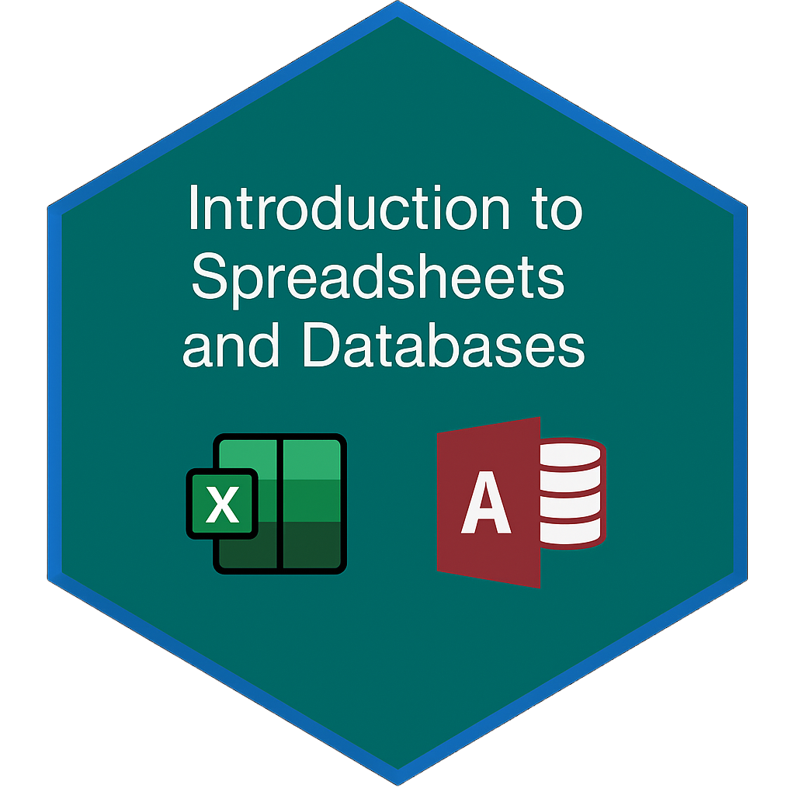
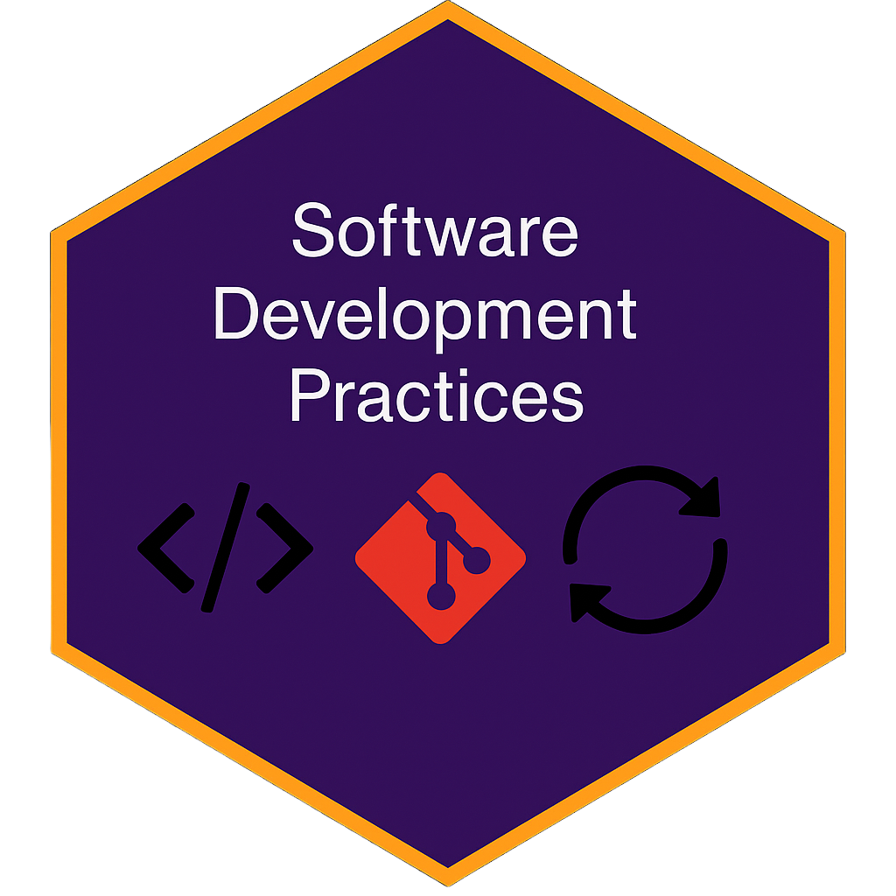
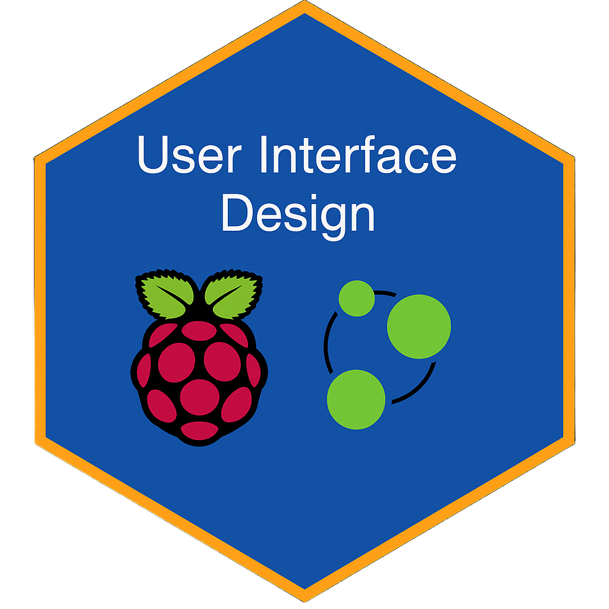
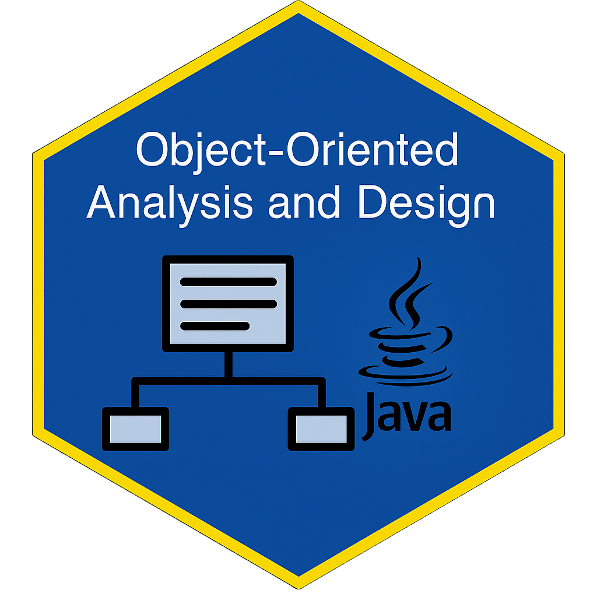
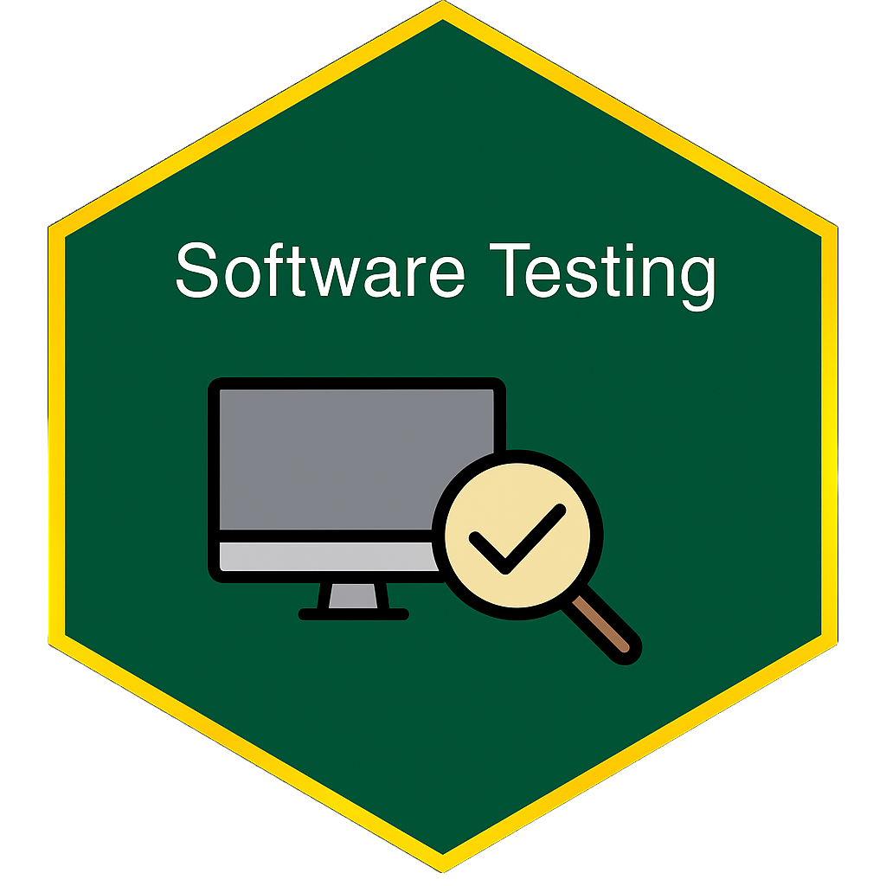

Teaching
Graduate Teaching Assistant · Department of Computer Science · Iowa State University · 2020–2026
From 2020 to 2026 I served as a Computer Science Graduate Teaching Assistant at Iowa State University. My goal in every course was a comprehensive, engaging, and challenging learning environment that met the diverse needs of students, connecting theory with real-world practice so that core computer science concepts became practical skills.
6 courses
12 semesters
13 offerings
4 areas
Teaching Map
Every semester from Fall 2020 to Spring 2026, one row per course. Select a block to jump to that course.
Courses

COMS 1130 Spreadsheets and Databases
This foundational course focuses on using tools such as Microsoft Excel and Microsoft Access for effective data organization, analysis, and reporting. Students develop proficiency in applying formulas, creating pivot tables, designing queries, and building forms and visual analyses to support practical business and data-driven decision-making.

COMS 3090 Software Development Practices
Fall 2022 Spring 2023 Spring 2024 Fall 2025
This course is a practical, hands-on program that focuses on modern software development standards. Core topics include Git, Agile methodologies, code reviews, unit testing, and continuous integration and deployment (CI/CD). Students collaborate on team-based projects that replicate real-world development workflows, with particular emphasis on collaboration, documentation, and iterative improvement. The course culminates in comprehensive Android application and game development, including design, implementation, testing, and deployment.

COMS 3190 User Interface Design
This course explores the principles of designing user-friendly and efficient interfaces. It integrates hardware and data-driven UI practices, incorporating Raspberry Pi for Internet of Things (IoT) applications and Node.js for front-end visualization and interactive design. Students learn to design, prototype, and evaluate interfaces with a focus on usability and user experience.

COMS 3620 Object-Oriented Analysis and Design
Fall 2020 Spring 2021 Fall 2021 Fall 2024
This course teaches the modeling and design of software systems using object-oriented principles. It emphasizes the use of UML diagrams, design patterns, and Java implementations to develop modular, maintainable, and scalable software solutions. Students gain experience moving from requirements to design to code in a structured, iterative way.
COMS 3630 Database Management Systems
This course covers the fundamentals of database architecture, data modeling, and Structured Query Language (SQL). Students gain hands-on experience with relational database systems while exploring key concepts such as indexing, transactions, normalization, and comprehensive database design. Emphasis is placed on designing robust schemas and writing efficient queries for real-world applications.

COMS 4170 Software Testing
This course focuses on the principles and practices of software verification and validation. Students learn to design and execute effective test cases, utilize debugging tools, and implement automation frameworks to ensure software quality, reliability, and maintainability.
How I Teach
Theory meets practice
Every concept tied to a real-world use, so students leave with skills they can apply, not only definitions.
Learn by building
Hands-on software development, user interface design, and database projects that build technical skill and problem-solving together.
Guidance for every learner
Project-based tasks combined with personalized guidance, so students with different backgrounds can face current challenges with confidence.
Looking ahead, I want to keep growing as an educator by:
- Incorporating new AI and software development tools into student learning, so students engage with modern development and analysis workflows.
- Creating interactive, experiential, and project-based learning environments where students learn by building.
- Contributing to the computer science education community through curriculum innovation, teaching-focused research, and mentoring other educators.
- Broadening access to computing so students can tackle real-world challenges with both theoretical foundations and practical skills.
Beyond the Classroom
I also create online learning resources that break complex concepts into clear, practical explanations that learners can work through at their own pace.
Notes and mini-books
Video tutorials
Walkthroughs of AI and computer science topics on YouTube.
Blog
Longer articles and explainers on Substack.
Email me if you would like to collaborate or learn more about my teaching and research.